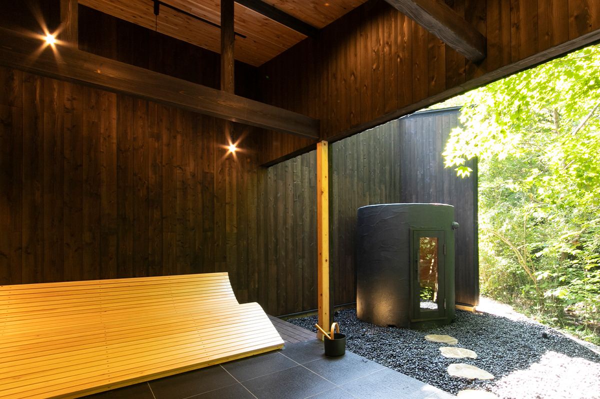
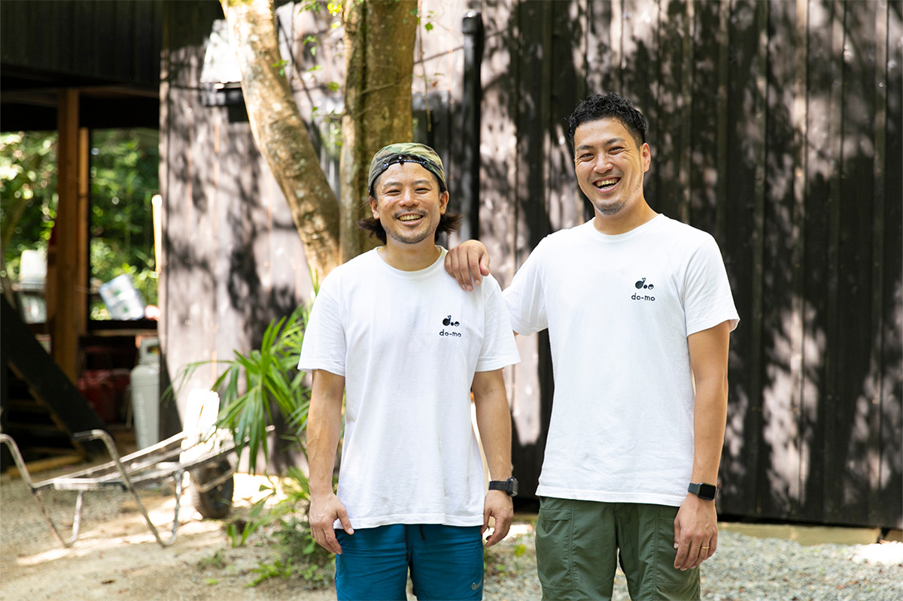
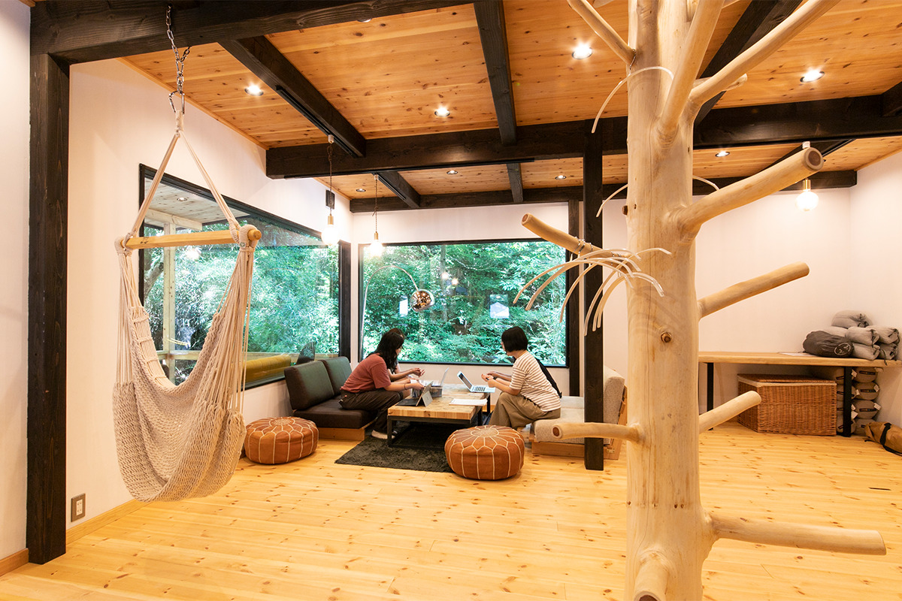
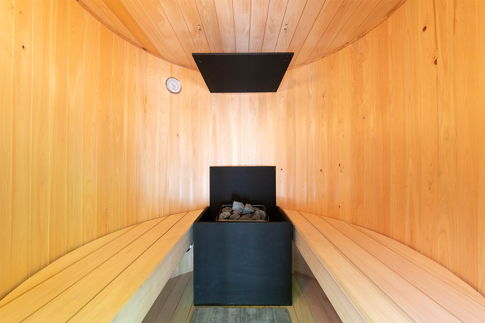
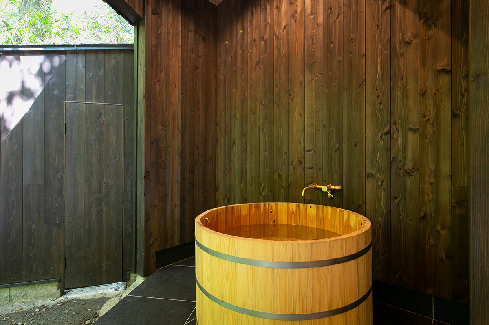
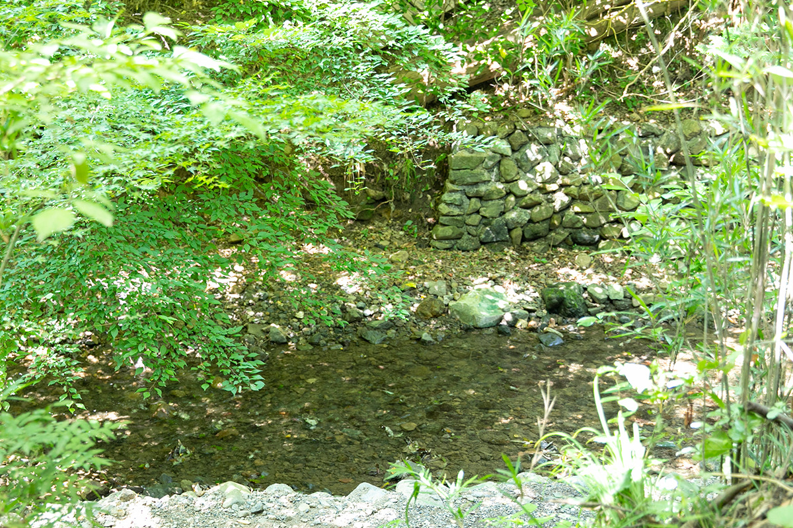
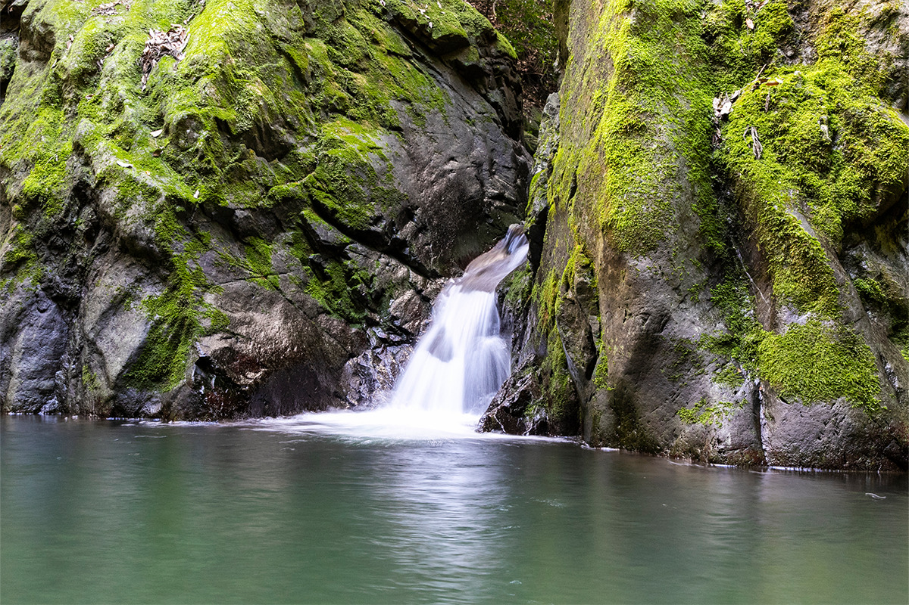
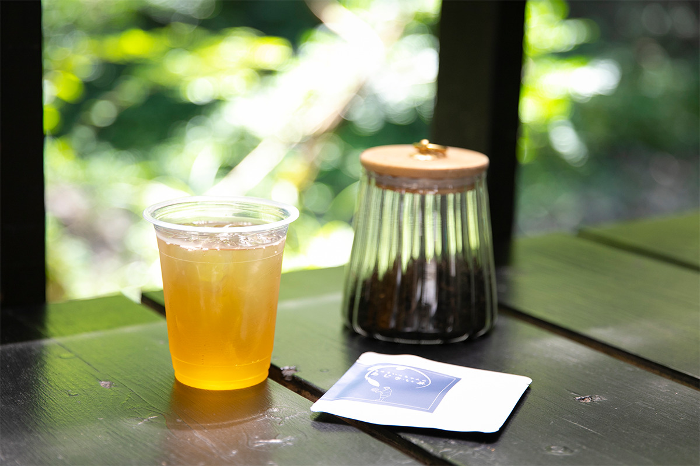
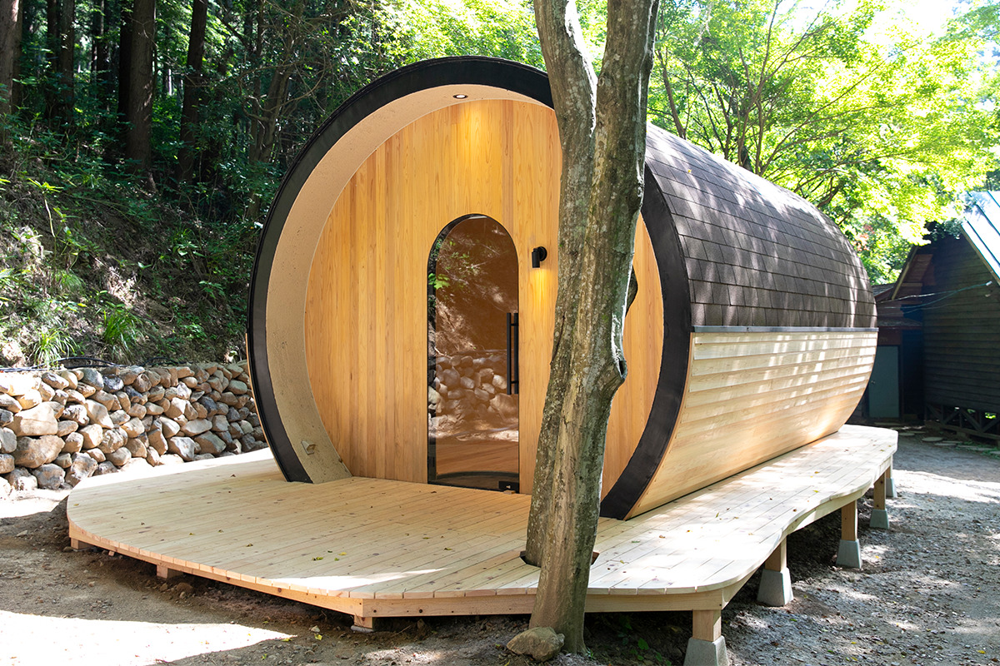
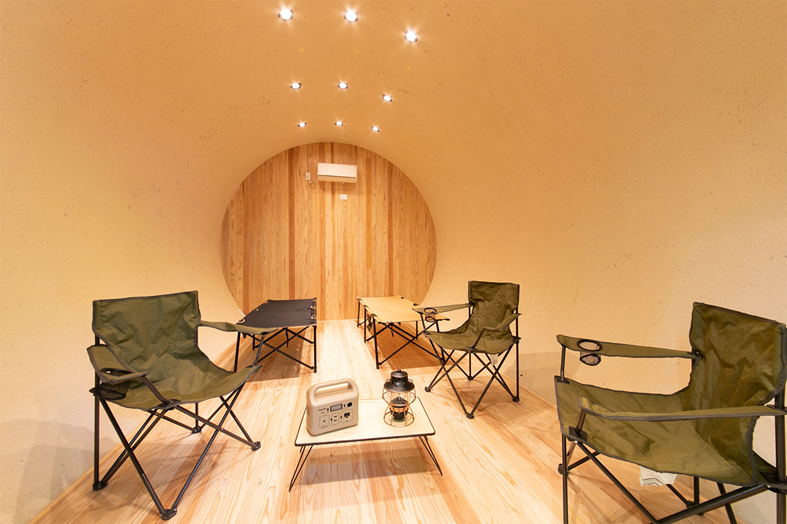

Токио · Акируно · кемпинг и сауна
«Сидзэндзин-мура» в Акируно: бочковая сауна, горная речка и крошечные дома в полутора часах от центра Токио

Чтобы оказаться в дикой природе, жителю Токио не нужен долгий отпуск и дальний перелёт. В горах на западе города компания do-mo превратила семейный кемпинг «Сидзэндзин-мура» в деревню, где парятся в бочковой сауне, остывают в горной речке и ночуют в крошечных домах.
Место
Деревня в часе от небоскрёбов
Акируно лежит на западе Токио, там, где город упирается в горы, и это ближайший к центру горный район. Кемпинг «Сидзэндзин-мура» глава компании do-mo получил от отца и превратил в стильную базу для отдыха на природе. Постройки здесь выкрашены в матовый чёрный, и у этого цвета есть причина.
«В этих местах раньше много жгли древесный уголь, поэтому фирменным цветом мы сделали матовый чёрный»
глава компании do-mo

Главная новинка 2022 года это бочковая сауна, которая открылась в сентябре. Её придумали, отталкиваясь от того, что остывать после парилки здесь можно в чистой горной речке и в водопадной чаше. Ради сауны сюда стоит приехать и без других планов, но вместе с барбекю или работой на свежем воздухе вариантов отдыха становится намного больше.
Коворкинг появился как ответ на то, как изменилась жизнь. Отец, приехавший с семьёй, может поработать здесь до обеда, а коллеги снимают зал целиком для встреч на природе.

На территории 17 мест для палаток. Новичкам лучше выбрать крошечный дом: в каждом есть розетки. Так проще всего попробовать деревенскую жизнь на современный лад в ближайших к центру Токио горах.
Сауна
Три захода: бочка, речка, водопад
Сауну сделали в форме бочки из древесины Тама, то есть из лесов района Тама на западе Токио. Внутри только японский кипарис хиноки, и после растопки парилка пахнет лесом.

Самое интересное начинается после парилки: для каждого из трёх заходов здесь своя вода.


На последний заход отправляются вверх по течению, к водопаду. Нырок в его чашу после жара парилки даёт то чувство полной лёгкости, которое японские любители сауны называют «тотоноу».

После сауны важно пить. В магазине на территории в 2022 году продавали чай из гортензии, которую собирают на склоне Минамисава-адзисай-яма, известном месте цветения гортензий в Акируно: пакет на 3 г стоил 600 иен.

Ночлег
Крошечный дом OVALE
Крошечные дома здесь строят из местного материала. do-mo tiny OVALE построен в форме полуцилиндра из древесины Тама, а в отделке использован и здешний песок.

Свою посуду и снаряжение тащить с собой не обязательно. В магазине кемпинга можно взять напрокат кухонную утварь, мелочи для готовки и походное снаряжение.

«Сидзэндзин-мура»
- Адрес
- Токио, Акируно, Фукасава, 198
- Телефон
- +81 70-3985-4878
- Цены / Вход
- крошечный дом от 30 000 иен за ночь, место в кемпинге от 3000 иен с человека (с налогом и сервисным сбором)
- Как добраться
- от станции Токио до станции Мусаси-Ицукаити около 1 часа 30 минут на поезде, на машине около 1 часа
Фото: Ямато Нонака.